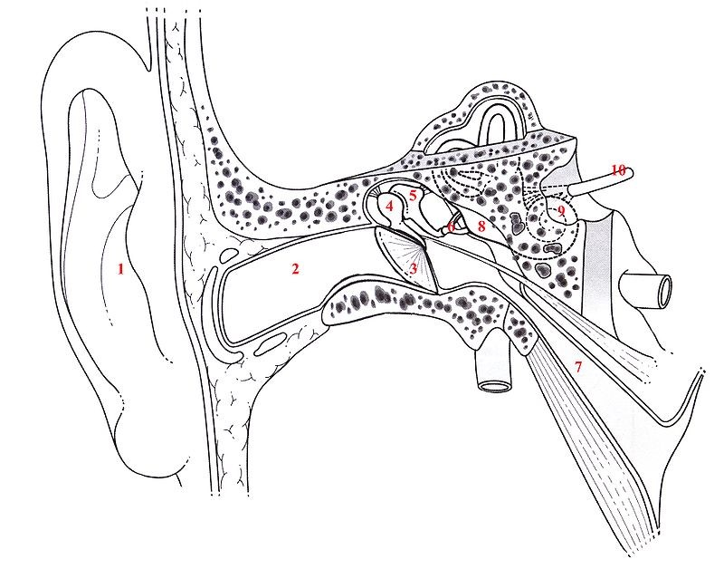

PARTIE II
LES EFFETS DU SON
ANDRIANJANAKA NOMENA
Une onde sonore est, comme vu dans la première partie, une perturbation mécanique qui se propage uniquement dans un milieu matériel. Celle-ci provoque des effets notamment sur l'Homme avec l'oreille mais elle peut aussi provoquer un phénomène de résonance sur des objets comme le verre ou le diapason. L'oreille est un organe important pour la communication puisqu'il est utilisé pour la réception et la transformation des ondes sonores en impulsions électriques permettant au cerveau humain de comprendre ce qui l'entoure. Cette capacité à percevoir les sons, l'ouïe, fait partie des cinq sens de l'Homme avec l'odorat, le toucher, le goût et la vue. Dans cette partie, nous nous intéresserons aux effets des ondes sur l'oreille et de ses conséquences mais aussi au phénomène de résonance sur le diapason.
Effets des ondes sonores sur l'Homme : l'oreille humaine
Dans cette sous-partie, nous parlerons de l'anatomie de l'oreille de son fonctionnement avec l'utilisation des ondes sonores et des effets néfastes du son. Nous verrons ensuite précisément de quelle manière agissent les ondes sonores grâce à une modélisation de l'oreille. L'oreille humaine est composée de 3 parties : l'oreille externe, l'oreille moyenne et l'oreille interne.
- L'oreille externe contient un pavillon et une entrée au conduit auditif. Il a une fonction de protection et de focalisation des ondes sonores. Le pavillon focalise les ondes sonores et les mène au conduit auditif.
-Les ondes sonores arrivent alors dans l'oreille moyenne. Cette partie est composé d'un tympan qui a pour but de transmettre les ondes sonores aux osselets. Ces osselets (marteau, enclume et étrier) transforment les ondes sonores en vibrations, analysable par l'oreille interne. L'énergie des ondes sonores est presque intégralement transmise à l'oreille interne via la fenêtre ovale grâce à ce mécanisme.
- L'oreille interne est la partie la plus complexe de l'oreille étant donné que c'est à cet endroit où les ondes sonores se transforment en impulsions électriques, cette transformation étant la base du fonctionnement de l'oreille. Elle est composé d'une cochlée qui est un tube enroulé autour du nerf auditif ayant pour forme une coquille d'escargot. Cette organe est remplie d'un liquide nommé endolymphe et de plusieurs cellules ciliées. Les vibrations amenées par l'oreille moyenne mettent en mouvement le liquide ce qui stimule les cellules ciliées ; un fois stimulées, elles envoient des impulsions électriques dans le nerf auditif. Ces impulsions vont directement au cerveau.
La trompe d'Eustache est un conduit reliant l'oreille moyenne et le nez. Ce sert à rééquilibrer la pression intérieure de l'oreille moyenne et extérieur de la partie externe.
1 : pavillon
2 : conduit auditif externe
3 : tympan
4 : marteau
5 : enclume
6 : étrier
7 : trompe d'Eustache
8 : oreille interne
9 : cochlée
10 : nerf auditif.
Schéma de l'oreille humaine
Le son peut parfois être nocif pour les oreilles. En effet, il existe un danger lorsque l'intensité du son dépasse les capacités de réception de l'oreille. Cette organe peut percevoir des sons compris entre 0 dB, qui est le seuil d'audibilité, et environ 130 dB qui correspond au seuil de douleur. Une exposition de longue durée à un son supérieur à 90 dB a pour conséquence une suppression définitive des cellules ciliées pourtant très importantes pour l'audition.
| Niveau sonore (en dB) | Exemples de sources d'émission du son |
|---|---|
| 0 | Aucune source, seuil d'audibilité |
| 10-30 | Studio d'enregistrement |
| 30-60 | Bibliothèque |
| 60-70 | Lave-linge/Aspirateur |
| 70-90 | Cour de récréation |
| 90-100 | Perceuse |
| 100-120 | Tronçonneuse/Marteau piqueur |
| 120-140 | Coup de fusil/Avion au décollage/Explosion |
Modélisation de l'oreille humaine
Dans cette expérience, nous allons créer une modélisation de l'oreille. Nous allons nous intéresser aux effets du son sur le gant en latex qui modélise la membrane.
Nous pouvons nous demander ici, quels sont les effets du son sur la membrane (ici le gant).
Ici, on observe une vibration de la membrane, c'est à dire un mouvement d'oscillation qui est dû à une accumulation d'énergie sur celle-ci. On peut dire que la membrane entre en résonance.
Phénomène de résonance
Le phénomène de résonance est la propriété partagée par un très grand nombre d’objets et de systèmes physiques d’absorber préférentiellement de l’énergie, généralement sous forme mécanique ou électromagnétique (dans notre cas le son), lorsqu’ils sont soumis à des forces variant périodiquement dans le temps. (Définition du site futura-science) En effet, chaque objet a une fréquence de résonance qui, à une certaine fréquence, va se mettre à absorber de l'énergie et à osciller. Nous allons montrer et confirmer ce phénomène de résonance à l'aide d'une expérience sur le diapason.
Phénomène de résonance sur le diapason
Nous avons vu précédemment qu'un objet vibre à une certaine fréquence nommé « fréquence de résonance ». Nous allons ici prendre le cas du diapason qui possède une fréquence de résonance à 440Hz.Le diapason est un instrument en acier composé d'une tige avec deux branches en forme de ''U''. Cet instrument sert à accorder un instrument grâce au son du « LA » émis. Dans cette expérience nous allons essayer de confirmer cette fréquence de résonance et voir la réaction du diapason face à des signaux sonores de différentes fréquences. Quels sont les effets des ondes sonores de différentes fréquences sur le diapason ?
-Vibration du diapason à 440Hz
-Existence d'un intervalle sur lequel on observe une réaction du diapason
On peut clairement entendre les vibrations du diapason lorsque l'on émet 440Hz et donc confirmer la première hypothèse. On peut également confirmer l'existence d'un intervalle de résonance pour le diapason car on peut entendre le diapason vibrer très faiblement à partir de 428Hz jusqu'à 470 Hz. Nous avons vu dans cette deuxième partie les effets des ondes sonores sur les structure notamment sur le diapason où nous avons confirmé le phénomène de résonance sur l'oreille plus précisément sur le tympan, organe clé pour la transmission. Nous avons également traité le sujet du danger que peut avoir le son, ce qui nous mène à chercher des moyens afin de limiter ces effets.
PARTIE III : LIMITER SES EFFETS